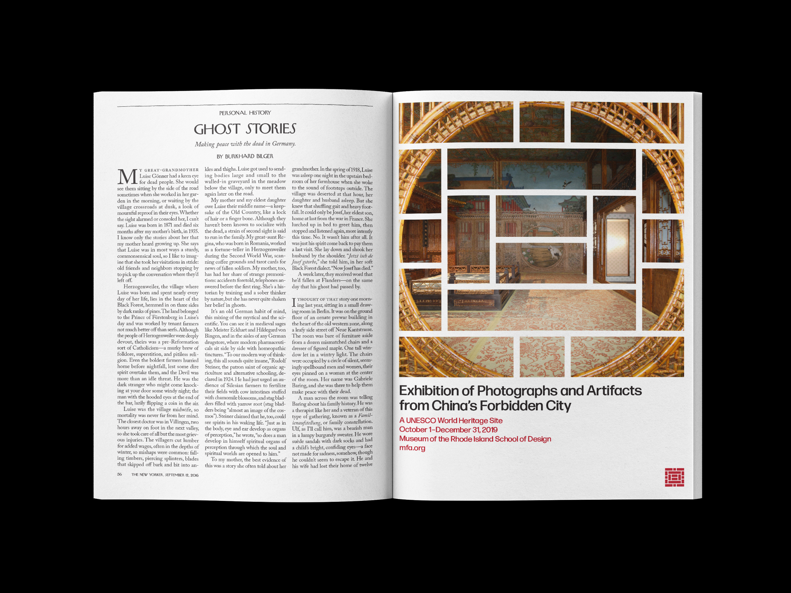
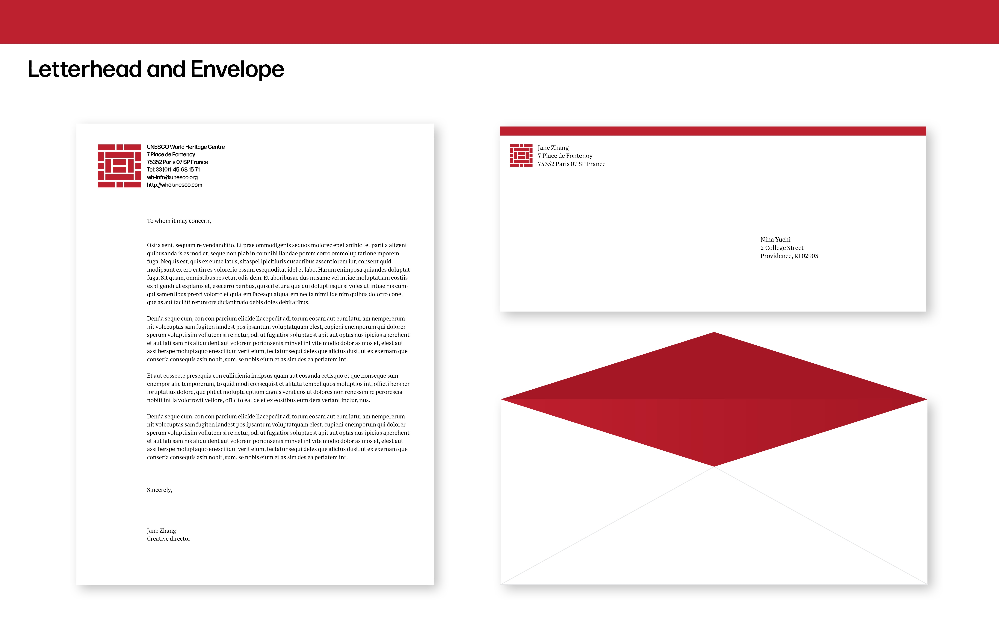
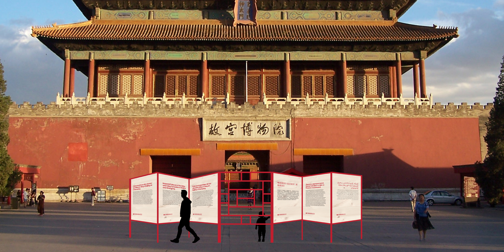
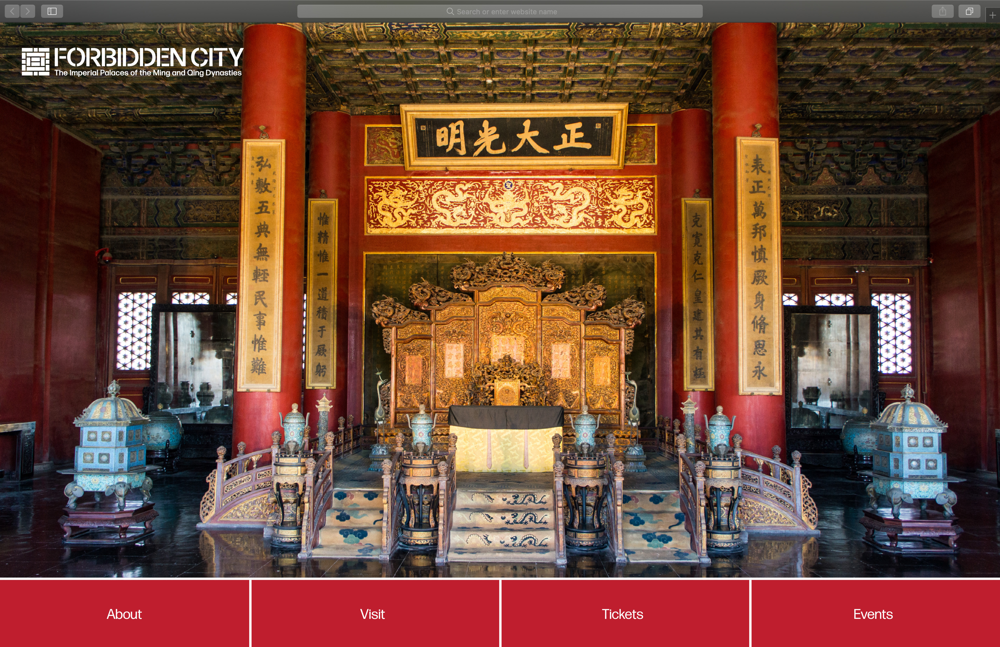
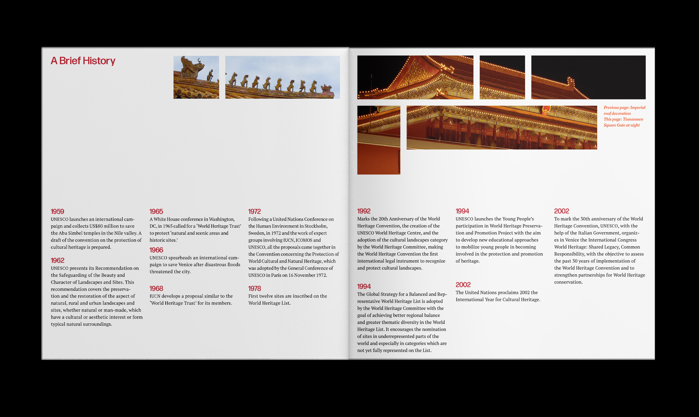
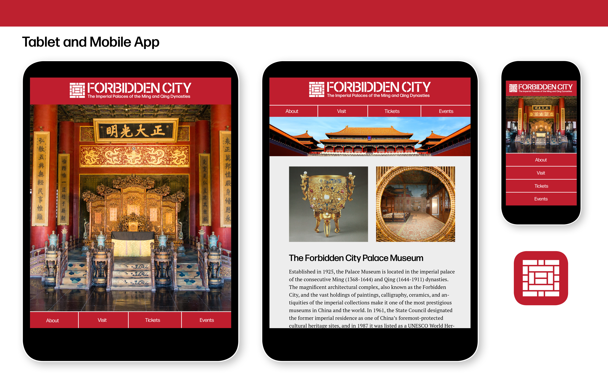

The Forbidden City — UNESCO World Heritage Site Branding
Branding identity, print design, web design
In this project, I designed the brand identity for the Imperial Palaces of the Ming and Qing Dynasties in Beijing and Shenyang in China (sometimes referred generally as the Forbidden City), a UNESCO Heritage Site. Drawing inspiration from the geometric windows in the Palace Museum, I designed the logo reflecting the building's traditional architecture. With the brand identity, I designed a site sign, print advertisements for the New Yorker, and a website for desktop, tablet, and mobile users, using the logo as a window framing the beautiful images of the city complex.
New Yorker print advertisements
 
Site sign
Publication
  Desktop, tablet, and mobile site